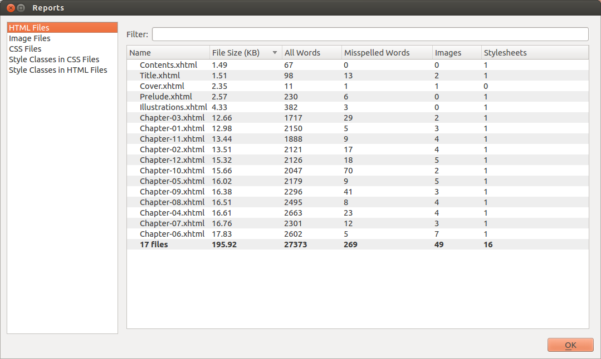
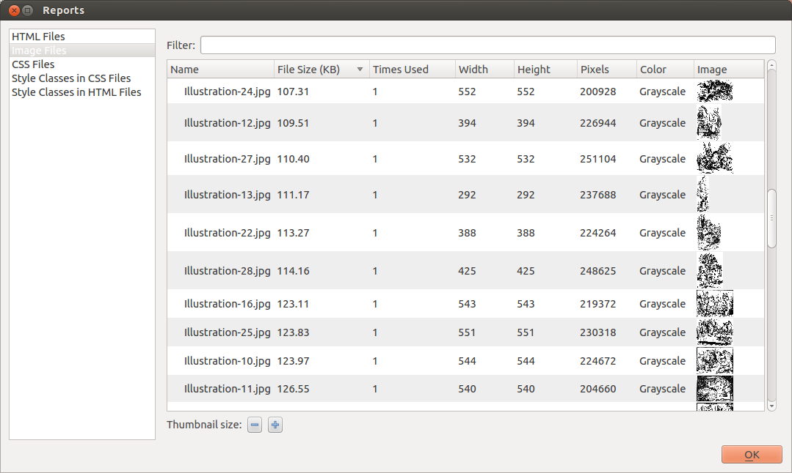
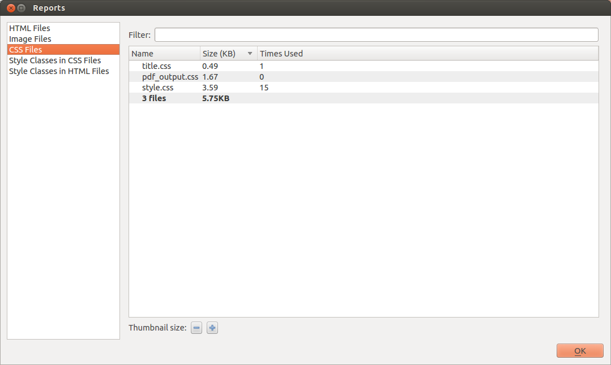
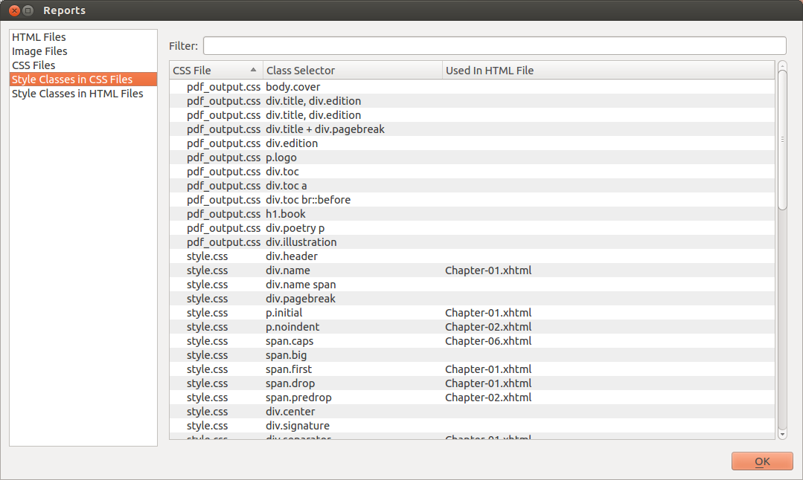
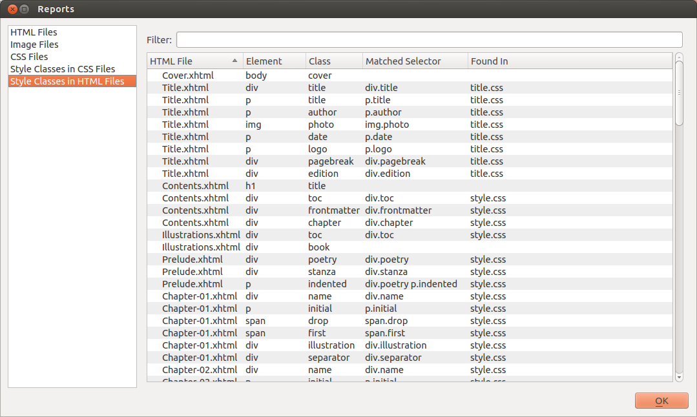

— View Details About Your Book —
Sigil provides several reports that list details about the files and styles in your book.
Use Tools→Reports to generate the reports and then select which report to view.
You can double click on an entry in the report to jump to the filename listed.
Tip
Some entries have tooltip information. For instance in the Image Report the number of times used column shows which files use the image.
This report lists all of your HTML files and details about the files.

This report lists all of your images and indicates whether or not they were used in the book and how many times.

This report lists all of your CSS Stylesheets and indicates whether or not they were linked to and how many times.

Style Classes in CSS Files
This report scans the CSS stylesheets in your book and for each style that uses a class name it lists whether it was used in the book or not.

This report scans the HTML files in your book and extracts a list of style class names that are used in the files. For each class name it lists whether or not it was found in a CSS Stylesheet or an Inline Style
